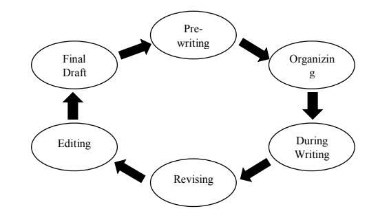

-

UNIT I: INTRODUCTION TO WRITING
-

UNIT I: INTRODUCTION TO WRITING
-

UNIT I: INTRODUCTION TO WRITING
UNIT I: INTRODUCTION TO WRITING
 INTRODUCTION
INTRODUCTION
Writing is one of the fundamental language skills acquired in schools that is involved and present in every field and every aspect of our lives.
In a daily basis, it is an important part of communication that allows us to communicate our message with clarity, fosters our ability to explain and refine our ideas not only towards ourselves but also towards others.
It is personal as it expreses who we are including our knowledge, our personal aspirations and even our future endeavors. Additionally, it offers the students the opportunity to simultaneously catch on vital facets in life facilities that can help them succeed in their academics, career, and also in other relevant aspects of their lives.
In this e-learning writing material, you will be learning about the writing process and the various conventions in writing towards enhancing your writing skills and achiecing high writing performance and writing competence.
 LEARNING OBJECTIVES
LEARNING OBJECTIVES
At the end of the lesson, you are expected to:
- Share insights about the importance of writing using and acrostic;
- Understand the writing proccess;
- Understand different writing strategies in the three stages of writing; and
- Identify the stages in writing.
 ACTIVATING PRIOR KNOWLEDGE
ACTIVATING PRIOR KNOWLEDGE
ACTIVITY 1
Directions: Using an accrostic of the word 'WRITING', share your insights about the importance of writing in to your life. Use the table below as your guide.|
|
|---|
| W |
| R |
| I |
| T |
| I |
| N |
| G |
 PRESENTATION OF CONTENT
PRESENTATION OF CONTENT
Learning to write is a sequential process. Output is important but with the goal of it in mind, effective writing is considered quality writing. (Dagdag, et.al., 2010)
There are two main characteristics that must be present in writing a text: the content and the form. It is said that “writing without form is like a human body without skeleton; writing without content is like a skeleton with no flesh.” (Mt. Edgecumbe 2)
According to Dagdag (2010), there are six steps in the writing process. These are the following:
- Pre-writing – this is also called the invention or brainstorming stage. It is not easy coming up with something to write. In this stage, you narrow your topic into the most important and relevant. Ask yourself these things before getting to writing: “Why should you write about this?” and “why should anyone read it?” You may come up with as many ideas as possible within a given time frame. Some examples to take note in pre-writing are listing, fast writing, spidering and mapping.
-
Organizing – this stage is vital in incorporating coherence in the transition of your writing.
After exhausting all possible ideas related to a topic, you may now focus in arranging these
ideas and thoughts into a sensible order.
The writer creates their initial composition by writing down all their ideas in an organized way to convey a particular idea or present an argument. Audience and purpose need to be finalized.
- During-writing – with a form in place and the content that would go with it, this is the stage where these ideas would be expressed in complete sentences and paragraphs.
-
Revising – this is the stage where you polish the order of your ideas and filter the information
needed to get your point across. This is where you start to look for any mechanical errors and
correct them.
The writer reviews, modifies, and reorganizes their work by rearranging, adding, or deleting content, and by making the tone, style, and content appropriate for the intended audience. The goal of this phase of the writing process is to improve the draft.
- Editing – the stage where writer proofreads and correct errors. He goes over the written work nd checks it for basic errors in grammar and mechanics, and edit to improve style and clarity. Having another writer’s feedback in this stage is helpful.
-
Writing the final draft – after your work has gone through revisions, you would now have to
write your final draft, which you are ultimately content with. The final writing is shared with
the group. Sharing can be accomplished in a variety of ways, and with the help of computers, it can even be printed or published online.
These steps comprise a basic yet continous writing process. Following each step would ensure quality written output, regardless of your topic and content.
Additionally, the Writing Process according to Brown & Hood (1989) aims to answer the following:
- Who you are writing or for (reader)
- Why you are writing (purpose)
- Why you are writing (purpose)
- Where you are, how much time you have, how you feel etc. (situation)
On the other hand, Tiongson (2016), suggests that the purpose and the reason why you’re writing the paper must be clear to you so that you can also properly identify your target audience. Hence, the following must be answered:
- What do you want to accomplish?
- Why are you sending this message?
With a purpose, ask yourself how you plan to achieve this purpose. Would you need to support your argument with evidences? Would you need to defend your stand’s weaknesses?
TOPIC 2: WRITING STRATEGIES
-
Pre-Writing Strategies
It is hard to find a topic worth writing about. The following pre-writing strategies would help you in finding one. Tiongson (2016) added that in choosing a topic, you must select one that interests you or one that you are familiar with for you to have the motivation to start and elaborate on it.
- Brainstorming – is also called listing. This is one of the most common methods of discovering a topic. List down as much ideas as you can within a given amount of time. It is suggested to start from general ideas and from there, write down all the possibilities. After listing all of them down, make sure to pick the one that best suits your purpose or reason for writing. The selection of topics may be broad but you may also find unlikely connections between each to create another possible topic.
- Clustering – is also called mind mapping or idea mapping. This is a technique in finding a writing topic wherein you find the relationships between ideas. To start this method, you must first put a subject forth and enclose it in a circle or underline it for emphasis. With that subject, think of other ideas that would link to the single subject and connect them using lines.
- Freewriting – the most unrestrained method in finding a suitable topic where you pour out all your thoughts nonstop in an exact order, language and form as you think them. You can only focus on a specific topic but you cannot edit all of these ideas. In this method, you have to force yourself to keep on writing with a single focus as its purpose is to generate as many ideas as you can without minding about technical errors such as in grammar and spelling. After freewriting, you get to highlight the most outstanding and interesting ideas.
-
During Writing Strategies
Once you’ve an outline of what you want to write, then you can begin Stage 2 which is drafting the essay. Take note that when you write an essay, one draft is not enough. You may need to write up to three drafts in order to perfect it. Here’s what you need to do at this stage:
- start writing
- write the thesis statement
- write the main ideas for each paragraph
- write the supporting details for each paragraph
- write the conclusion
-
Post-Writing Strategies
These are the strategies that you need to do after completing the draft. It ensures that you check the essay and edit them before you hand in your essay.
- revising - go through the whole essay and change if necessary
- editing / proofreading - check the flow of ideas, grammar, spelling, punctuation
 APPLICATION
APPLICATION
ACTIVITY 2: WHERE DO I BELONG?
Directions: Which of the following activities are done on the pre-writing, writing, or re-writing tage? Write your answer on the space before the number.
_____________________1. Gather information._____________________2. Do free writing.
_____________________3. Choose a topic.
_____________________4. Brainstorm.
_____________________5. Cluster.
_____________________6. Work on the details.
_____________________7. Check the mechanics.
_____________________8. Have fun.
_____________________9. Ensure relevance of content.
_____________________10. Follow the flow of ideas.
ACTIVITY 3
Directions: Answer the following questions.
-
Which of the following gives you more excitement in writing?
- Academic writing like reports, essays, and reflection papers
- Writing a piece of literature like poems, short stories, and novels
- Research writing
- Journalistic writing
- Daily journals like diaries
- Expressive writing like love letters, posters and appreciation letter
Answer:__________________________________
-
What is your reason for choosing your answer in number 1?
Answer: ______________________________________________
-
How important is writing in your academic life?
Answer: ______________________________________________
-
How important is writing in your personal liefe?
Answer: ______________________________________________
-
How important is writing in your future career?
Answer: ______________________________________________
 REFLECTION
REFLECTION